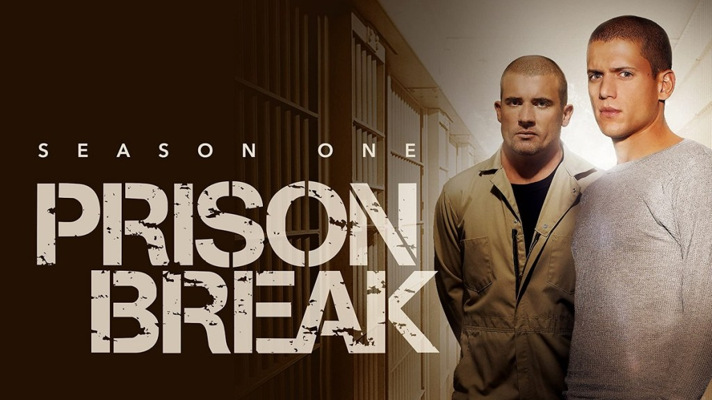
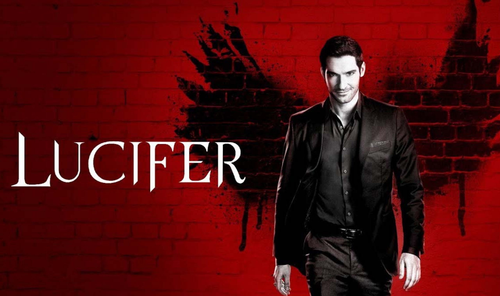
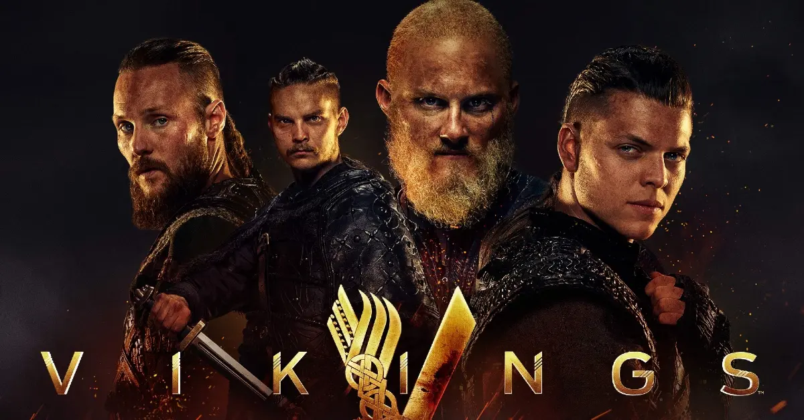
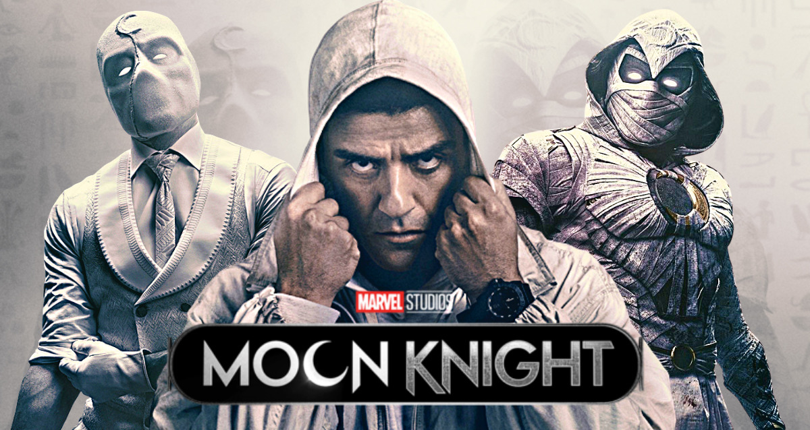

The Best Action Series of All Time
1.The Vampire Diaries

The Vampire Diaries is an American supernatural teen drama television series developed by Kevin Williamson and Julie Plec, based on the book series of the same name written by L. J. Smith. The series premiered on The CW on September 10, 2009, and concluded on March 10, 2017, having aired 171 episodes over eight seasons.
The pilot episode attracted the largest audience for The CW of any series premiere since the network began in 2006;[1] the first season averaged 3.60 million viewers.[2] It became the most-watched series on the network before being supplanted by Arrow. The show has received numerous award nominations, winning four People's Choice Awards and many Teen Choice Awards.
2.The Walking Dead

The Walking Dead takes place after the onset of a worldwide zombie apocalypse. The zombies, referred to as "walkers", shamble towards living humans and other creatures to eat them; they are attracted to noise, such as gunshots, and to different scents, e.g. humans. Although it initially seems that only humans that are bitten or scratched by walkers can turn into other walkers, it is revealed early in the series that all living humans carry the pathogen responsible for the mutation. The mutation is activated after the death of the pathogen's host, and the only way to permanently kill a walker is to damage its brain or destroy the body entirely, such as by cremating it.
The series centers on sheriff's deputy Rick Grimes, who wakes up from a coma. While in a coma, the world has been taken over by walkers. He becomes the leader of a group of survivors from the Atlanta, Georgia, region as they attempt to sustain and protect themselves not only against attacks by walkers but by other groups of survivors willing to use any means necessary to stay alive.
3.Breaking Bad

Set in Albuquerque, New Mexico, between 2008 and 2010,[8] Breaking Bad follows Walter White, a struggling, frustrated high school chemistry teacher who transforms into a ruthless kingpin in the local methamphetamine drug trade, driven to provide for his family financially after being diagnosed with inoperable lung cancer. Initially making only small batches of meth with his former student Jesse Pinkman in a rolling meth lab, Walter and Jesse eventually expand to make larger batches of special blue meth that is incredibly pure and creates high demand. Walter takes on the name "Heisenberg" to mask his identity. Because of his drug-related activities, Walter eventually finds himself at odds with his family, the Drug Enforcement Administration (DEA) through his brother-in-law Hank Schrader, the local gangs, and the Mexican drug cartels (including their regional distributors), putting him and his family's lives at risk.
4.The Witcher

The story begins with Geralt of Rivia, Crown Princess Ciri of Cintra, and the quarter-elf sorceress Yennefer of Vengerberg at different points of time, exploring formative events that shape their characters throughout the first season, before eventually merging into a single timeline. Geralt and Ciri are linked by destiny since before she was born when he unknowingly demanded her as a reward for his services by invoking "the Law of Surprise". After the two finally meet, Geralt becomes the princess's protector and must help her and fight against her various pursuers to prevent her Elder Blood and powerful magic from being used for malevolent purposes and keep Ciri and their world safe.
5.Prison Break
The first season follows the rescue of Lincoln Burrows, who is accused of murdering Terrence Steadman, the brother of Vice President of the United States, Caroline Reynolds. Lincoln is sentenced to death and is incarcerated in Fox River State Penitentiary where he awaits his execution. Lincoln's brother, brilliant structural engineer Michael Scofield, is convinced of Lincoln's innocence and formulates an elaborate escape plan. In order to gain access to Fox River, Michael commits an armed robbery which results in him being sentenced to Fox River. In prison, Michael befriends the prison doctor Sara Tancredi when he pretends to suffer from Type 1 diabetes, in order to gain daily access to the prison's infirmary, where he receives his daily insulin shots. The brothers' fight to ward off the execution is aided by their lifelong friend Veronica Donovan, who begins to investigate the conspiracy that put Lincoln in jail. However, they are hindered by covert agents, members of an organization called "The Company". The Company was responsible for framing Lincoln, and they did so because of Lincoln's father Aldo Burrows, and his former connections with The Company. The brothers, along with six inmates, Fernando Sucre, Theodore "T-Bag" Bagwell, Benjamin Miles "C-Note" Franklin, David "Tweener" Apolskis, John Abruzzi, and Charles "Haywire" Patoshik, who come to be known as the Fox River Eight, escape in the season's penultimate episode by using their prison privileges to dig an escape tunnel underneath the prison.
6.Peaky Blinders

Peaky Blinders is a crime drama centred on a family of mixed Irish Traveller and Romani origins based in Birmingham, England, starting in 1919, several months after the end of the First World War. It centres on the Peaky Blinders street gang and their ambitious, cunning crime boss Tommy Shelby. The gang comes to the attention of Major Chester Campbell, a detective chief inspector in the Royal Irish Constabulary sent over by Winston Churchill from Belfast, where he had been sent to clean up the city of the Irish Republican Army flying columns, the Communist Party of Great Britain, street gangs, and common criminals.[1][2] Winston Churchill (played by Andy Nyman in series 1 and Richard McCabe in series 2) charges him with suppressing disorder and uprising in Birmingham and recovering a stolen cache of arms meant to be shipped to Libya.[3][4] The first series concludes on 3 December 1919—"Black Star Day", the event where the Peaky Blinders plan to take over Billy Kimber's betting pitches at the Worcester Races.
The second series has the Peaky Blinders expand their criminal organisation in the "South and North while maintaining a stronghold in their Birmingham heartland".[5] It begins in 1921 and ends with a climax at Epsom racecourse on 31 May 1922, Derby Day.[6]
The third series takes place in 1924, following Tommy and the gang as they enter an even more dangerous world by expanding once again, this time internationally. The third series also features Father John Hughes (Paddy Considine), who is involved in an anti-communist organization; Ruben Oliver (Alexander Siddig), a painter whom Polly enlists to paint her portrait; Russian Grand Duchess Tatiana Petrovna (Gaite Jansen); and Linda Shelby (Kate Phillips), the new wife of Arthur.
The fourth series begins on Christmas Eve 1925, with the Peaky Blinders getting word that the New York Mafia, led by Luca Changretta (Adrien Brody), is coming to avenge the murder of his father, committed the previous season and ends following the general strike of May 1926, with Tommy using Jessie Eden for information and being elected as a Member of Parliament in 1927.
The fifth series runs two years later, from (Black Tuesday), 29 October 1929, to 7 December 1929, the morning after a rally led by British Union of Fascists leader Sir Oswald Mosley.
The sixth series begins on 5 December 1933, as prohibition is repealed in the United States. The Nazi Party has obtained power in Germany, leading to a growth in membership of the British Union of Fascists. Tommy must not only deal with Mosley but also with plots from the Irish Mob as well as the Anti-Treaty IRA.
7.Game of Thrones

Game of Thrones has an ensemble cast which has been estimated to be the largest on television.[9] In 2014, several actors' contracts were renegotiated to include a seventh-season option.[10] By the final season, five of the main cast members made $1 million per episode, making them among the highest paid television performers.[11][12] Eddard "Ned" Stark (Sean Bean) is the head of House Stark. He and his wife, Catelyn (Michelle Fairley), have five children: Robb (Richard Madden), Sansa (Sophie Turner), Arya (Maisie Williams), Bran (Isaac Hempstead-Wright), and Rickon (Art Parkinson). Ned also has an illegitimate son, Jon Snow (Kit Harington), who, along with his scholarly friend, Samwell Tarly (John Bradley), serve in the Night's Watch under Lord Commander Jeor Mormont (James Cosmo). The Wildlings living north of the Wall include Gilly (Hannah Murray) and the warriors Tormund Giantsbane (Kristofer Hivju) and Ygritte (Rose Leslie).[13] Others associated with House Stark include Ned's ward Theon Greyjoy (Alfie Allen), Ned's vassal Roose Bolton (Michael McElhatton), and Roose's illegitimate son, Ramsay Snow (Iwan Rheon). Robb accepts help from the healer Talisa Maegyr (Oona Chaplin), while elsewhere, Arya befriends blacksmith's apprentice Gendry Rivers (Joe Dempsie) and assassin Jaqen H'ghar (Tom Wlaschiha). In the Stormlands, the tall warrior Brienne of Tarth (Gwendoline Christie) is introduced to Catelyn. In King's Landing, Ned's friend, King Robert I Baratheon (Mark Addy), shares a loveless political marriage with Cersei Lannister (Lena Headey). Her younger twin brother, Ser Jamie (Nikolaj Coster-Waldau), serves on the Kingsguard while their younger brother Tyrion (Peter Dinklage) is attended by his mistress Shae (Sibel Kekilli) and mercenary Bronn (Jerome Flynn). Cersei's father is Tywin (Charles Dance), head of House Lannister and richest man in Westeros. Cersei has two sons: Joffrey (Jack Gleeson) and Tommen (Dean-Charles Chapman). Joffrey is guarded by the scar-faced warrior Sandor "The Hound" Clegane (Rory McCann).[14] The king's Small Council includes his treasurer, Petyr "Littlefinger" Baelish (Aidan Gillen), and his spymaster, Varys (Conleth Hill). In Dragonstone, Robert's younger brother, Stannis (Stephen Dillane), is advised by foreign priestess Melisandre (Carice van Houten) and former smuggler Ser Davos Seaworth (Liam Cunningham). In the Reach, the Tyrell family is led by matriarch Olenna (Diana Rigg) and represented at court by her granddaughter Margaery (Natalie Dormer). The High Sparrow (Jonathan Pryce) is given power as a religious leader, while, in Dorne, the warrior Ellaria Sand (Indira Varma) seeks vengeance against the Lannisters.[13] Across the Narrow Sea in Pentos, siblings Viserys Targaryen (Harry Lloyd) and Daenerys Targaryen (Emilia Clarke) (colloquially referred to as "Dany") are in exile, with the former plotting to reclaim his father's throne. Daenerys is forced into marrying Khal Drogo (Jason Momoa), a leader of the nomadic Dothraki. Her retinue eventually comes to include the exiled knight Ser Jorah Mormont (Iain Glen), her aide Missandei (Nathalie Emmanuel), mercenary Daario Naharis (Michiel Huisman), and elite soldier Grey Worm (Jacob Anderson).[13]
8.Lucifer
The motif of a heavenly being striving for the highest seat of heaven only to be cast down to the underworld has its origins in the motions of the planet Venus, known as the morning star.
The Sumerian goddess Inanna (Babylonian Ishtar) is associated with the planet Venus, and Inanna's actions in several of her myths, including Inanna and Shukaletuda and Inanna's Descent into the Underworld appear to parallel the motion of Venus as it progresses through its synodic cycle.[28][29][30][31]
A similar theme is present in the Babylonian myth of Etana. The Jewish Encyclopedia comments:
The brilliancy of the morning star, which eclipses all other stars, but is not seen during the night, may easily have given rise to a myth such as was told of Ethana and Zu: he was led by his pride to strive for the highest seat among the star-gods on the northern mountain of the gods [...] but was hurled down by the supreme ruler of the Babylonian Olympus.[32]
The fall from heaven motif also has a parallel in Canaanite mythology. In ancient Canaanite religion, the morning star is personified as the god Attar, who attempted to occupy the throne of Ba'al and, finding he was unable to do so, descended and ruled the underworld.[33][34] The original myth may have been about the lesser god Helel trying to dethrone the Canaanite high god El, who lived on a mountain to the north.[35][36] Hermann Gunkel's reconstruction of the myth told of a mighty warrior called Hêlal, whose ambition was to ascend higher than all the other stellar divinities, but who had to descend to the depths; it thus portrayed as a battle the process by which the bright morning star fails to reach the highest point in the sky before being faded out by the rising sun.[37] However, the Eerdmans Commentary on the Bible argues that no evidence has been found of any Canaanite myth or imagery of a god being forcibly thrown from heaven, as in the Book of Isaiah (see below). It argues that the closest parallels with Isaiah's description of the king of Babylon as a fallen morning star cast down from heaven are to be found not in Canaanite myths, but in traditional ideas of the Jewish people, echoed in the Biblical account of the fall of Adam and Eve, cast out of God's presence for wishing to be as God, and the picture in Psalm 82 of the "gods" and "sons of the Most High" destined to die and fall.[38] This Jewish tradition has echoes also in Jewish pseudepigrapha such as 2 Enoch and the Life of Adam and Eve.[32][39] The Life of Adam and Eve, in turn, shaped the idea of Iblis in the Quran.[40]
The Greek myth of Phaethon, a personification of the planet Jupiter,[41] follows a similar pattern.[37]
9.Vikings
The series is inspired by the tales of the Norsemen of early medieval Scandinavia. It broadly follows the exploits of the legendary Viking chieftain Ragnar Lothbrok and his crew, family and descendants, as notably laid down in the 13th-century sagas Ragnars saga Loðbrókar and Ragnarssona þáttr, as well as in Saxo Grammaticus' 12th-century work Gesta Danorum. Norse legendary sagas were partially fictional tales based in the Norse oral tradition, written down about 200 to 400 years after the events they describe. Further inspiration is taken from historical sources of the period, such as records of the Viking raid on Lindisfarne depicted in the second episode, or Ahmad ibn Fadlan's 10th-century account of the Varangians. The series begins at the start of the Viking Age, marked by the Lindisfarne raid in 793.
10.Moon Knight
The series follows Steven Grant, a mild- mannered gift-shop employee, who becomes plagued with blackouts and memories of another life. Steven discovers he has dissociative identity disorder and shares a body with mercenary Marc Spector.